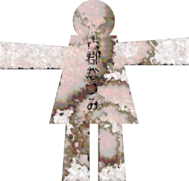
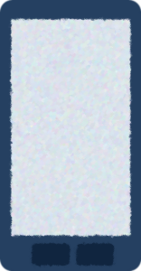
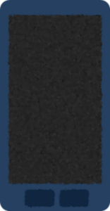
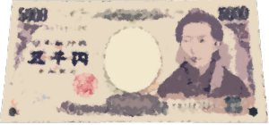
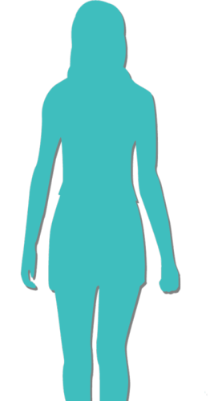

This scene is not unlocked yet in your progress
Paper Doll

I woke up to the blare of sirens.
"What is it, this early..."
The time was 6:30.
Huh? I'd fallen asleep on the living-room sofa...
"What is it, this early..."
The time was 6:30.
Huh? I'd fallen asleep on the living-room sofa...
There was a blanket over me.
Mom must have gotten home late last night and thought to cover me.
Another 30 minutes. I'll go back to sleep in my room...
Mom must have gotten home late last night and thought to cover me.
Another 30 minutes. I'll go back to sleep in my room...
Oh, I didn't charge my phone.
Oh, and I haven't had my bath yet either.
Oh! I didn't do my homework!
Homework, right from the day of the entrance ceremony...
Oh, and I haven't had my bath yet either.
Oh! I didn't do my homework!
Homework, right from the day of the entrance ceremony...
Sadly, it looked like going back to sleep would have to wait.
I turned toward the desk to get the homework handout out of my bag.
I turned toward the desk to get the homework handout out of my bag.
"............!
No way...!"

Three sheets of paper had been left on the desk.
These were paper dolls, no mistake.
Their surfaces were smeared with something like vomit.
And there was writing on them...
These were paper dolls, no mistake.
Their surfaces were smeared with something like vomit.
And there was writing on them...
Ryoji Kogori Akane Kogori and, Natsumi Kogori.
The strength drained from my body, and I sank to the floor.
My heart pounded wildly, and my breathing quickened.
That's impossible...! I didn't do anything last night!
My heart pounded wildly, and my breathing quickened.
That's impossible...! I didn't do anything last night!
Did the "witch" personality inside me make me do this...!?
Is there no escaping the curse on the anniversary of Dad's death!?
Even so, why the Kogori family's names...
Is there no escaping the curse on the anniversary of Dad's death!?
Even so, why the Kogori family's names...
If there's anything I can think of, it's the cause of my dad's death.
No, no! I don't hold a grudge over Dad, not at all! I don't hate them either!
No, no! I don't hold a grudge over Dad, not at all! I don't hate them either!
No...! At this rate Natsumi will...! The life I finally got...!
This would send me right back again! I absolutely have to stop the shinigami!
This would send me right back again! I absolutely have to stop the shinigami!
"Harukaaa! You're finally up, so no going back to sleep!"
It was Mom's cheerful voice, first thing in the morning.
Maybe the air in Motoki-cho suits her. She's livelier than she was in Megasawa.
It was Mom's cheerful voice, first thing in the morning.
Maybe the air in Motoki-cho suits her. She's livelier than she was in Megasawa.
"Uh... yeah! I'm up! Mom, you're heading to Arata now, right?"
I hurriedly shoved the dolls into my desk.
If Mom found something like this, who knew what would happen...!
I hurriedly shoved the dolls into my desk.
If Mom found something like this, who knew what would happen...!
"About that, a job came up that I just can't get out of.
I explained things to the Niimura main family, so Mom's going to work today."
"O-oh, I see... Got it..."
So in the end, Mom wasn't going either.
But a job more important than the thirteenth-year memorial service... [TN: Buddhist memorials count the year of death as the first year.]
"O-oh, I see... Got it..."
So in the end, Mom wasn't going either.
But a job more important than the thirteenth-year memorial service... [TN: Buddhist memorials count the year of death as the first year.]
"Also, they say there's no school today. I'll forward you the email too, Haruka!"
"G-got it...!"
I'd never been this tense talking to Mom.
"G-got it...!"
I'd never been this tense talking to Mom.
My phone rang. Probably the email Mom forwarded.

Subject: No School Today.
Body:
Good morning, everyone in Class 3-1! This is your homeroom teacher, Tanizaki!
School is closed today.
For safety, the police says you should refrain from going outside, is what they sayed.
I will post the details in detail on the homepage.
Well then, everyone, have a nice holiday!
Body:
Good morning, everyone in Class 3-1! This is your homeroom teacher, Tanizaki!
School is closed today.
For safety, the police says you should refrain from going outside, is what they sayed.
I will post the details in detail on the homepage.
Well then, everyone, have a nice holiday!
Tanizaki-sensei's Japanese is as weird as ever.
And wishing us a nice holiday, of all things...
And wishing us a nice holiday, of all things...
Never mind that. Right now, the question is what to do about this curse.
The shinigami will come for the three of them, no doubt about it.
I can't undo this curse, and even if I could, I don't have time to look into how now.
"Damn...!"
I slammed my fist down on the desk as hard as I could.
I slammed my fist down on the desk as hard as I could.
A call? This early in the morning.
Who could it be? It was from a number I didn't know.
"Yes... hello?"
"Mm... Haruka, it's been a while."
"That voice... Geez, I was wondering who it was..."
Who could it be? It was from a number I didn't know.
"Yes... hello?"
"Mm... Haruka, it's been a while."
"That voice... Geez, I was wondering who it was..."
"Mm... you didn't save my number?"
"Nah, I just got a new phone, and the transfer didn't go right."
"Mm... I see..."
"So, what's up?"
"Nah, I just got a new phone, and the transfer didn't go right."
"Mm... I see..."
"So, what's up?"
"Mm... I heard neither of you is coming today?"
"Huh? Oh, yeah. Mom says a job came up out of nowhere."
"Mm... Haruka, I heard you weren't feeling well?"
"I got food poisoning the day before yesterday. I'm taking a sick day today to be safe, but I'm fine now. Hey... is Grandma mad?"
"Huh? Oh, yeah. Mom says a job came up out of nowhere."
"Mm... Haruka, I heard you weren't feeling well?"
"I got food poisoning the day before yesterday. I'm taking a sick day today to be safe, but I'm fine now. Hey... is Grandma mad?"
"Mm... don't worry. Grandma seems to understand."
"Okay... good, then... That all you wanted?"
"Mm... well, yes."
"Did something happen?"
"Mm... Kana was let down, that's all. Seemed to be looking forward to seeing you, Haruka."
"Okay... good, then... That all you wanted?"
"Mm... well, yes."
"Did something happen?"
"Mm... Kana was let down, that's all. Seemed to be looking forward to seeing you, Haruka."
"Ah, that one? Probably wanted to hassle me with more stupid dirty jokes."
"Mm... heh. Kana adores you, Haruka."
"Feels more like I'm a toy, though. So, where's Kana?"
"Mm... the moment I called you, Haruka, Kana got called away by Mom."
"Aw, bad timing."
"Mm... heh. Kana adores you, Haruka."
"Feels more like I'm a toy, though. So, where's Kana?"
"Mm... the moment I called you, Haruka, Kana got called away by Mom."
"Aw, bad timing."
"Mm... Haruka, are you really feeling better? You don't sound very lively."
"R-really? Oh, no... see, I just woke up."
"Mm... sorry, calling so early. I was a little worried."
"R-really? Oh, no... see, I just woke up."
"Mm... sorry, calling so early. I was a little worried."
"Okay, sorry you went to the trouble. Say hi to everyone for me.
Yeah, bye."

And right then, my phone's battery died.
Maybe it was the ordinary conversation, but I felt I'd calmed down a little.
But that alone doesn't solve anything. I have to come up with a plan against the shinigami.
But that alone doesn't solve anything. I have to come up with a plan against the shinigami.
If I think it over in the shower, I'll probably come up with a slightly better idea.
I braced both hands on the shower wall and let the hot water pour over my head.
Facing straight down so the water wouldn't get in my mouth, I breathed slowly and deeply through it.
Okay, think hard about what I can do right now!
There's a limit to what I can do alone.
If possible, with someone's help...
Facing straight down so the water wouldn't get in my mouth, I breathed slowly and deeply through it.
Okay, think hard about what I can do right now!
There's a limit to what I can do alone.
If possible, with someone's help...
Someone who'd help me with something like this would be... Maybe I should talk to Goto.
She can read the room, so she probably won't flat-out deny the curse...
She can read the room, so she probably won't flat-out deny the curse...
But even while I'm talking to her, I'll be worried about Natsumi.
Right now, what I can do is stay by Natsumi's side the whole day, even if it's just today.
If the shinigami appears, I'll talk it into stopping.
There's no way I can stick with Natsumi's parents too...
Right now, what I can do is stay by Natsumi's side the whole day, even if it's just today.
If the shinigami appears, I'll talk it into stopping.
There's no way I can stick with Natsumi's parents too...
No, wait.
Then I'd be talking to Goto about the curse in front of Natsumi.
I can never tell Natsumi something like this!
Natsumi right in front of me, and still able to talk with Goto...
My head can't come up with a situation that convenient.
Besides, Natsumi might be laid up with April sickness today too.
Then I'd be talking to Goto about the curse in front of Natsumi.
I can never tell Natsumi something like this!
Natsumi right in front of me, and still able to talk with Goto...
My head can't come up with a situation that convenient.
Besides, Natsumi might be laid up with April sickness today too.
In that case, how about spending the day at Natsumi's place, the three of us with Goto?
If I could talk to Goto while Natsumi is resting...
But would the two of them act that conveniently...?
If I could talk to Goto while Natsumi is resting...
But would the two of them act that conveniently...?
At times like this, how should I think it through?
Okay... at times like this, I'll think about what Goto would say.
If she were in my position―
Okay... at times like this, I'll think about what Goto would say.
If she were in my position―

"Hmm, a situation where there's so much to do that you get confused..."
"Exactly, and I don't have much time either!"
"Niimura-senpai, do you really need to do everything you're thinking about right now? You'd be surprised how many things people try to do that aren't even necessary."
"Exactly, and I don't have much time either!"
"Niimura-senpai, do you really need to do everything you're thinking about right now? You'd be surprised how many things people try to do that aren't even necessary."
"I-is that so..."
"So you decide on the things you absolutely can't drop―in other words, your priorities. Rank things, and let's think about the important ones first."
"So you decide on the things you absolutely can't drop―in other words, your priorities. Rank things, and let's think about the important ones first."
―Or so she would probably say.
Okay, it's only in my imagination, but I'll try doing what Goto says.
First, decide on priorities.
The top priority is being by Natsumi's side.
Talking to Goto won't stop the shinigami from coming.
Once I've made sure I can stay with Natsumi, then I talk to Goto.
Okay, it's only in my imagination, but I'll try doing what Goto says.
First, decide on priorities.
The top priority is being by Natsumi's side.
Talking to Goto won't stop the shinigami from coming.
Once I've made sure I can stay with Natsumi, then I talk to Goto.
Maybe I'll get in touch with Natsumi as soon as I'm out of the shower.
No... if Natsumi tells me "My April sickness is wearing me out," it'll be hard to say I'm coming over.
No... if Natsumi tells me "My April sickness is wearing me out," it'll be hard to say I'm coming over.
Damn...! My head can't go any further than this...!
Maybe I should make Goto the top priority after all―
No, this is just going in circles!
Maybe I should make Goto the top priority after all―
No, this is just going in circles!
Then I'll have to force one of them through...
The most realistic is to camp out at Natsumi's place, saying I'm there to look after Natsumi.
It'll probably still make her feel she has to look after me, but it can't be helped this time.
The most realistic is to camp out at Natsumi's place, saying I'm there to look after Natsumi.
It'll probably still make her feel she has to look after me, but it can't be helped this time.
Natsumi's mom should be leaving for work around 8.
But showing up out of nowhere first thing in the morning to look after her would be weird.
For now, I'll wait for a time when Natsumi is alone, and go then.
But showing up out of nowhere first thing in the morning to look after her would be weird.
For now, I'll wait for a time when Natsumi is alone, and go then.

"Hmm, how about like this!? Or is this one better!?"
Today, as usual, Mom was devoting herself to looking young.
My mom does look young for her age, but once you're past 40, it gets a little painful to watch...
Today, as usual, Mom was devoting herself to looking young.
My mom does look young for her age, but once you're past 40, it gets a little painful to watch...
"Hey, Mom... isn't it about time you dressed your age? You're way past 40 already..."
"Oh my, no way! Dad died young, so wouldn't I feel awful if I were the only one who turned into a middle-aged lady? For Dad's sake too, I have to stay young forever!"
"Oh my, no way! Dad died young, so wouldn't I feel awful if I were the only one who turned into a middle-aged lady? For Dad's sake too, I have to stay young forever!"
My dad, just as I'd seen in the memorial photo yesterday, was an ugly man.
Once, Mom told me how she and Dad got together.
Surprisingly, it was Mom who went after Dad, and hard, apparently.
Back then, lots of men were drawn to Mom by her looks, but Dad was, above all, a warm and kind person.
Once, Mom told me how she and Dad got together.
Surprisingly, it was Mom who went after Dad, and hard, apparently.
Back then, lots of men were drawn to Mom by her looks, but Dad was, above all, a warm and kind person.
And since Dad looked at what was on the inside, Mom fell completely in love with him, apparently.
Even so, Mom didn't slack on her looks either, and always kept herself pretty so that Dad would be pleased.
Even so, Mom didn't slack on her looks either, and always kept herself pretty so that Dad would be pleased.
Mom always says this lately.
"It's what's inside a person that counts! Don't be the kind of woman who only dresses up on the outside!"
So she says, but what Mom is doing now is...
Mom's dressing young is the very symbol of who Mom is now.
In Mom's heart, time has stood still for 12 years.
"It's what's inside a person that counts! Don't be the kind of woman who only dresses up on the outside!"
So she says, but what Mom is doing now is...
Mom's dressing young is the very symbol of who Mom is now.
In Mom's heart, time has stood still for 12 years.
Forever dressing young like this, she keeps chasing an illusion of Dad, who's gone.
For my part, I'd like her to find someone nice soon.
For my part, I'd like her to find someone nice soon.

"Oh, Haruka, really! It's about time you learned to carry yourself like a woman!
For a 17-year-old girl to walk around after her bath without even a towel on is so unladylike!"
"Huh? Oh, yeah... I'll be careful..."
"Huh? Oh, yeah... I'll be careful..."
―It was 8 o'clock. A good time to head over to Natsumi's place.
"Harukaaa! Why don't you hang out with Natsumi-chan today?"
Mom, back from taking out the trash, was shouting from the front door.
"Huh? Oh, yeah... I'll go over in a bit."
Mom, back from taking out the trash, was shouting from the front door.
"Huh? Oh, yeah... I'll go over in a bit."
"Just now, Natsumi-chan was out taking out the trash too.
Actually, I already invited her! She said she'll come over in a little while!"
"Hey, Mom..."
I'd been worried about how Natsumi was feeling, but Mom was being a bit pushy.
"Hey, Mom..."
I'd been worried about how Natsumi was feeling, but Mom was being a bit pushy.
"She seems to be feeling good today! She said she'll come right over once she's changed!"
Well, if she's feeling good, I guess it's fine.
Actually, now that I think about it, with how close Natsumi and I are, maybe I didn't need to hold back that much...
I seem to be pretty on edge today.
Well, if she's feeling good, I guess it's fine.
Actually, now that I think about it, with how close Natsumi and I are, maybe I didn't need to hold back that much...
I seem to be pretty on edge today.
"Have a good day."
I stood at the front door to see Mom off.
"Oh, that's right, Haruka, use this to have lunch with Natsumi-chan."
I stood at the front door to see Mom off.
"Oh, that's right, Haruka, use this to have lunch with Natsumi-chan."

Mom handed me a 5,000-yen bill.
"5,000 yen for lunch...
We can't really afford that, can we? Mom, you never even get a day off..."
"The trip to Arata is off, so that much is freed up. It's fine once in a while, isn't it?"
"Haah... Okay, then I'll take it, thanks.
"The trip to Arata is off, so that much is freed up. It's fine once in a while, isn't it?"
"Haah... Okay, then I'll take it, thanks.
But can't you take a little more time off? Mom, at this rate you're gonna collapse again, right?"

"Haruka, you don't need to worry about that. This sort of thing is a parent's duty."
"I looked into it, and it seems there are a few places in Motoki-cho that'll hire you on full-time from a part-time job. I'll work part-time, and once I graduate high school, at one of those―"
"What about college?"
"I looked into it, and it seems there are a few places in Motoki-cho that'll hire you on full-time from a part-time job. I'll work part-time, and once I graduate high school, at one of those―"
"What about college?"
"There's no way we've got money like that!?"
"You're still in high school, so you mustn't worry about money. Didn't I just say so? This is a parent's duty."
"Still, come on... there's a limit, isn't there?"
"Besides, if I can't do even this much for you, Haruka, I'd never be able to face Dad."
"You're still in high school, so you mustn't worry about money. Didn't I just say so? This is a parent's duty."
"Still, come on... there's a limit, isn't there?"
"Besides, if I can't do even this much for you, Haruka, I'd never be able to face Dad."
"Hey, hold on. Mom, you're obviously working too much. C'mon, cut back on work a little."
"............"
"Hey..."
"Haruka, let's talk about that later. Don't go deciding on your own yet."
"...Yeah, okay."
"............"
"Hey..."
"Haruka, let's talk about that later. Don't go deciding on your own yet."
"...Yeah, okay."
"Say... Haruka..."
"Hm?"
"Hm?"
"Today, you and Natsumi-chan...
get along."
"Huh?"
"Huh?"
Mom left.
When Mom said those last words, I couldn't feel any expression in her eyes or her voice.
Like when I'd talk about Natsumi back when we lived in Megasawa City.
When Mom said those last words, I couldn't feel any expression in her eyes or her voice.
Like when I'd talk about Natsumi back when we lived in Megasawa City.
Well, maybe I'm overthinking it...
More importantly, today I stay with Natsumi.
When there's a chance, I invite Goto.
Mom and Natsumi seemed to be talking on the outside walkway. Natsumi would be here soon.
More importantly, today I stay with Natsumi.
When there's a chance, I invite Goto.
Mom and Natsumi seemed to be talking on the outside walkway. Natsumi would be here soon.
Read ✓ Next: Goto's Suspicion →